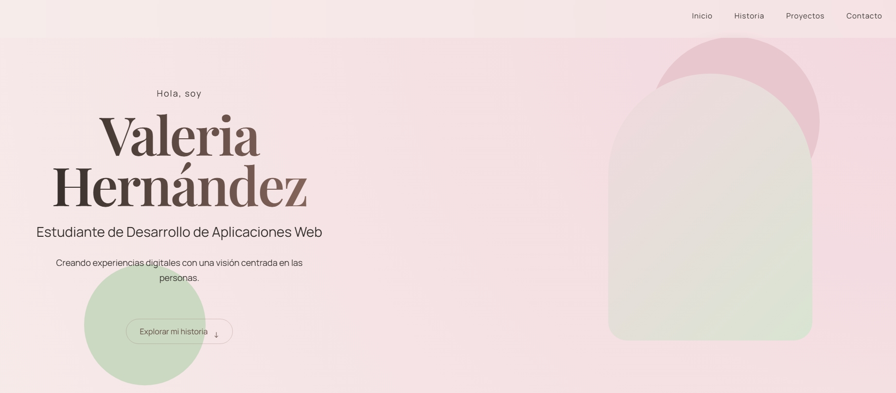

TaskFlow
Aplicación minimalista para organizar tareas, creada con HTML, CSS y JavaScript.
HTML · CSS · JavaScript Ver proyecto →Hola, soy
Creando experiencias digitales con una visión centrada en las personas.
Explorar mi historiaProyectos seleccionados
Aplicación minimalista para organizar tareas, creada con HTML, CSS y JavaScript.
HTML · CSS · JavaScript Ver proyecto →
Mi primera experiencia creando una identidad digital y desarrollando una web desde cero.
HTML · CSS · JavaScript Ver proyecto →Aplicación consumiendo datos externos y mostrando información dinámica.
JavaScript · APIMi camino
Una etapa donde desarrollé responsabilidad, empatía y capacidad para resolver problemas trabajando con personas.
Actualmente estudio Desarrollo de Aplicaciones Web y descubro nuevas formas de crear con tecnología.
Construyendo proyectos y preparándome para formar parte del mundo del desarrollo.
Sobre mí
Mi trayectoria comenzó en el área sanitaria, donde desarrollé responsabilidad, empatía y capacidad para resolver problemas. Actualmente estudio Desarrollo de Aplicaciones Web, creando proyectos y ampliando mis conocimientos en el mundo del desarrollo.
Tecnologías
Contacto